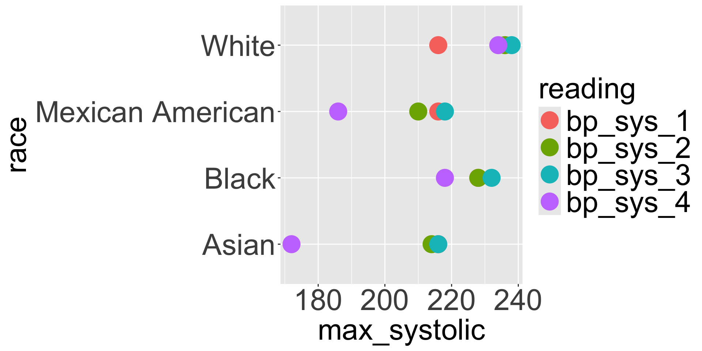
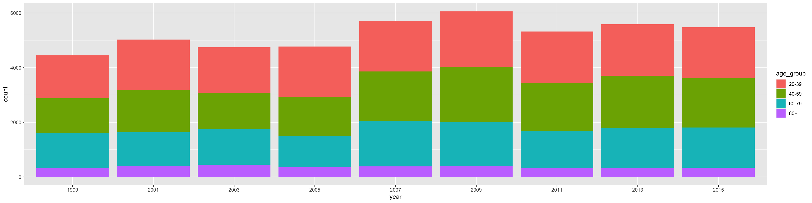
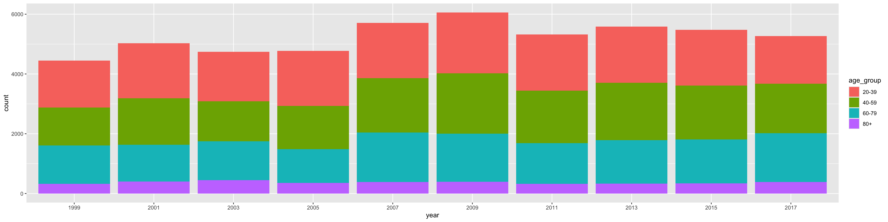
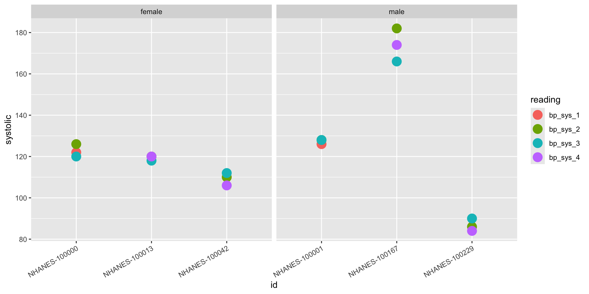

[1] 9254Advanced Tabular Data
Alejandro Schuler
Learning Goals:
- group and summarize data by one or more columns
- transform between long and wide data formats
- combine multiple data frames using joins on one or more columns
Summaries
NHANES data
This is a subset of the National Health and Nutrition Examination Survey (NHANES)
- The full dataset. NHANES has been run by the CDC since the 1960s. Every two years it interviews a nationally representative sample of about 10,000 Americans, brings them into a mobile examination center for a physical exam, and draws blood. Hundreds of variables are released publicly, cycle by cycle.
- The subsetted dataset. We are looking at the 2017-2018 cycle here, with about 30 of the variables: demographics, body measurements, blood pressure, and a handful of lab values.
- Data processing The coded values in the public files have been translated into readable labels and the variables renamed, so you don’t need the NHANES codebook open to read the data. Nothing else has been changed.
- Goal. We will use the data here to illustrate different functions for data transformation, often focused on picking out participants with unusually high or low values for a given measurement as compared to the distribution across all participants.
Summarize
summarize()boils down the data frame according to the conditions it gets. In this case, it creates a data frame with a single column calledsys_avgthat contains the mean of thebp_sys_1column- As with
mutate(), the name on the left of the=is something you make up that you would like the new column to be named. mutate()transforms columns into new columns of the same length, butsummarize()collapses down the data frame into a single row


- note that you can also pass in multiple conditions that operate on multiple columns at the same time
Exercise: summaries
Find the average, maximum, and minimum first systolic reading among participants whose education is College grad. Hint: filter and summarize.
Grouping
Grouped summaries
- Summaries are more useful when you apply them to subgroups of the data
# A tibble: 6 x 2
education max_sys
<chr> <dbl>
1 9-11th grade NA
2 College grad NA
3 High school NA
4 Less than 9th grade NA
5 Some college NA
6 <NA> NAgroup_by()is a helper function that “groups” the data according to the unique values in the column(s) it gets passed.
- Its output is a grouped data frame that looks the same as the original except for some additional metadata that subsequent functions can use
summarize()works the same as before, except now it returns as many rows as there are groups in the data- The result also always contains colunmns corresponding to the unique values of the grouping variable

Group on many columns
# A tibble: 4 x 3
# Groups: obese [2]
obese high_sys mean_hba1c
<lgl> <lgl> <dbl>
1 FALSE FALSE 5.56
2 FALSE TRUE 5.99
3 TRUE FALSE 5.88
4 TRUE TRUE 6.31- The result has the summary value for each unique combination of the grouping variables
Computing the number of rows in each group
- The
n()function counts the number of rows in each group:
# A tibble: 6 x 2
education how_many
<chr> <int>
1 9-11th grade 530
2 College grad 1115
3 High school 1107
4 Less than 9th grade 385
5 Some college 1516
6 <NA> 1649- You can also use
count(), which is just a shorthand for the same thing
Exercise: blood pressure range per group
Ignoring NAs, what are the highest and lowest first systolic readings seen for each education level in the nhanes dataset?
What steps should you take to solve this problem? When you have a question that asks something about “for each …” that usually indicates that you need to
group_by()the data by whatever thing that is. When you are asking about a summary measure (like a mean, max etc.), that usually indicates the use ofsummarize(). In this problem, what column(s) are you grouping by? What summaries of what columns are you computing?Now that you have a structure, write the code to implement it and solve the problem.
Exercise: summarize and plot
Before continuing, run this code to reformat your data and store it as a new data frame nhanes_tidy (we’ll see how to do this later today):
Have a look at the dataframe you created. Use it to recreate this plot:

The max_systolic variable in the x-axis of the plot indicates the maximum systolic reading across all participants (in whatever grouping we are looking at).
It’s helpful to think backwards from the output you want. First outline the ggplot code that would generate the given plot. What does the dataset need to look like that is going into ggplot in order to get the plot shown here? How can we get from nhanes_tidy to that data?
Filtering grouped data
filter()is aware of grouping. When used on a grouped dataset, it applies the filtering condition separately in each group
# A tibble: 6 x 3
# Groups: race [6]
id race bmi
<chr> <chr> <dbl>
1 NHANES-100082 Other 72.6
2 NHANES-94117 White 74.8
3 NHANES-94528 Asian 60.6
4 NHANES-97756 Mexican American 59.7
5 NHANES-97938 Black 86.2
6 NHANES-99795 Other Hispanic 52 - This is an extremely convenient idiom for finding the rows that minimize or maximize a condition
Mutating grouped data
# A tibble: 16 x 4
# Groups: education [6]
education id rank bp_sys_1
<chr> <chr> <dbl> <dbl>
1 9-11th grade NHANES-100389 1 224
2 9-11th grade NHANES-96003 2.5 216
3 9-11th grade NHANES-97959 2.5 216
4 College grad NHANES-94792 1.5 216
5 College grad NHANES-96526 1.5 216
6 College grad NHANES-99851 3 200
7 High school NHANES-96586 1 216
8 High school NHANES-102241 2 198
9 Less than 9th grade NHANES-101807 2 204
10 Less than 9th grade NHANES-98142 2 204
11 Less than 9th grade NHANES-98693 2 204
12 Some college NHANES-102367 1 228
13 Some college NHANES-97727 2 212
14 <NA> NHANES-97486 1 168
15 <NA> NHANES-100153 2 150
16 <NA> NHANES-98596 3 146- when
mutateis used on a grouped dataset, it applies the mutation separately in each group
# A tibble: 2 x 4
education id rank bp_sys_1
<chr> <chr> <dbl> <dbl>
1 9-11th grade NHANES-100389 2 224
2 Some college NHANES-102367 1 228- without the
group_by, the ranking is done overall across all participants.
Exercise: lowest reading per participant
Using nhanes_tidy, create a dataset that shows which of the systolic readings was the lowest one for each participant
Tidy data: rearranging a data frame
Messy data
- Sometimes data are organized in a way that makes it difficult to compute in a vector-oriented way. For example, look at this dataset:
# A tibble: 3 x 11
age_group `1999` `2001` `2003` `2005` `2007` `2009` `2011` `2013` `2015`
<chr> <dbl> <dbl> <dbl> <dbl> <dbl> <dbl> <dbl> <dbl> <dbl>
1 0-19 4838 5450 4901 5177 4055 4194 4019 4225 4070
2 20-39 1569 1843 1656 1839 1844 2033 1878 1880 1864
3 40-59 1269 1556 1336 1446 1818 2021 1754 1923 1801
# i 1 more variable: `2017` <dbl>- the values in the table represent how many participants in that age group were examined in the survey cycle that began in that year.
- How could I use ggplot to make this plot? It’s hard!

Messy data
# A tibble: 3 x 11
age_group `1999` `2001` `2003` `2005` `2007` `2009` `2011` `2013` `2015`
<chr> <dbl> <dbl> <dbl> <dbl> <dbl> <dbl> <dbl> <dbl> <dbl>
1 0-19 4838 5450 4901 5177 4055 4194 4019 4225 4070
2 20-39 1569 1843 1656 1839 1844 2033 1878 1880 1864
3 40-59 1269 1556 1336 1446 1818 2021 1754 1923 1801
# i 1 more variable: `2017` <dbl>- One of the problems with the way these data are formatted is that the survey cycle, which is a property of the participants, is stuck into the names of the columns.
- Because of this, it’s also not obvious what the numbers in the table mean (although we know they are counts)
Tidy data
- Here’s a better way to organize the data:
# A tibble: 6 x 3
age_group year count
<chr> <chr> <dbl>
1 0-19 1999 4838
2 0-19 2001 5450
3 0-19 2003 4901
4 0-19 2005 5177
5 0-19 2007 4055
6 0-19 2009 4194This data is tidy. Tidy data follows three precepts:
- each “variable” has its own dedicated column
- each “observation” has its own row
- each type of observational unit has its own data frame
In our example, each of the observations are different groups of participants, each of which has an associated age group, year, and count. These are the variables that are associated with the groups of participants.
Tidy data
Tidy data is easy to work with.

Tidying data with pivot_longer()
tidyr::pivot_longer()is the function you will most often want to use to tidy your data- the three important arguments are: a) a selection of columns, b) the name of the new key column, and c) the name of the new value column

Tidying data with pivot_longer()
tidyr::pivot_longer()is the function you will most often want to use to tidy your data
# A tibble: 2 x 3
age_group year count
<chr> <chr> <dbl>
1 0-19 1999 4838
2 0-19 2001 5450- the three important arguments are: a) a selection of columns, b) the name of the new key column, and c) the name of the new value column
“Messy” data is relative and not always bad
Systolic blood pressure for four patients, before and after starting a new medication:
# A tibble: 4 x 3
patient bp_before bp_after
<dbl> <dbl> <dbl>
1 1 152 138
2 2 141 135
3 3 158 141
4 4 147 149# A tibble: 8 x 3
patient time bp
<dbl> <chr> <dbl>
1 1 before 152
2 1 after 138
3 2 before 141
4 2 after 135
5 3 before 158
6 3 after 141
7 4 before 147
8 4 after 149Pivoting wider
- As we saw with the blood pressure example, sometimes our data is actually easier to work with in the “wide” format.
- wide data is also often nice to make tables for presentations, or is (unfortunately) sometimes required as input for other software packages
- To go from long to wide, we use
pivot_wider():
Exercise: pivot
I have a dataset that records the pollution levels (in ppm) in three cities across five months:
# A tibble: 15 x 3
city month smoke_ppm
<chr> <chr> <dbl>
1 SF Jan 14.4
2 SF Feb 39.4
3 SF Mar 20.4
4 SF Apr 44.2
5 SF May 47.0
6 LA Jan 2.28
7 LA Feb 26.4
8 LA Mar 44.6
9 LA Apr 27.6
10 LA May 22.8
11 NY Jan 47.8
12 NY Feb 22.7
13 NY Mar 33.9
14 NY Apr 28.6
15 NY May 5.15Use a pivot and mutate to compute the difference in pollution levels between SF and LA across all 5 months. The output should look like this:
# A tibble: 5 x 4
month SF LA SF_LA_diff
<chr> <dbl> <dbl> <dbl>
1 Jan 14.4 2.28 12.1
2 Feb 39.4 26.4 13.0
3 Mar 20.4 44.6 -24.2
4 Apr 44.2 27.6 16.6
5 May 47.0 22.8 24.2Exercise: cleaning NHANES
Use the NHANES data to reproduce the following plot:

The participants of interest are c('NHANES-100000', 'NHANES-100013', 'NHANES-100042', 'NHANES-100001', 'NHANES-100167', 'NHANES-100229').
Think backwards: what do the data need to look like to make this plot? How do we pare down and reformat nhanes so that it looks like what we need?
Exercise: tabulating missigness
Use the NHANES data to make the following table:
[1] "Number of missing systolic readings:"# A tibble: 3 x 4
# Groups: race [3]
race `College grad` `High school` `Some college`
<chr> <int> <int> <int>
1 Asian 611 141 202
2 Black 318 454 661
3 White 604 692 897The numbers in the table are the number of systolic readings that were missing across all the participants in each race and education group.
Combining multiple tables with joins
Relational data
- When a survey like NHANES releases its data, it doesn’t come as one big table. It is split into a table of measurements and table(s) with information about the participants and about how the data was collected.
nhanes_exams = read_csv("https://raw.githubusercontent.com/alejandroschuler/r4ds-courses/mph-nhanes/data/nhanes/nhanes_exams.csv")
nhanes_participants = read_csv("https://raw.githubusercontent.com/alejandroschuler/r4ds-courses/mph-nhanes/data/nhanes/nhanes_participants.csv")
nhanes_sessions = read_csv("https://raw.githubusercontent.com/alejandroschuler/r4ds-courses/mph-nhanes/data/nhanes/nhanes_sessions.csv")- The exam data has one row per participant per exam component (body measures, blood pressure, and so on), with an id for that exam, the session it was done in, and the examination center it was done at.
# A tibble: 1 x 5
participant_id exam_id session_id center_id component
<chr> <chr> <chr> <chr> <chr>
1 NHANES-100000 EX-100000-1 MEC-20180417-M MEC2 body measures- The participant data table contains some participant demographic information.
# A tibble: 1 x 7
participant_id birth_country sex age_group race education birth_date
<chr> <chr> <chr> <chr> <chr> <chr> <date>
1 NHANES-100000 United States female 20-39 Black Some college 1996-06-29- The session data contains the session type and the dates the sessions were run
- These data are not independent of each other. Participants described in the
participantdata are referenced in theexamdata, and the sessions referenced in theexamdata are in thesessiondata. The participant ids from theexamdata are used for accessing the measurements.

participantconnects toexamvia a single variable,participant_id.examconnects tosessionthrough thesession_idvariable.
An example join
- Imagine we want to add participant information to the exam data
- We can accomplish that with a join:
# A tibble: 34,816 x 11
participant_id exam_id session_id center_id component birth_country sex
<chr> <chr> <chr> <chr> <chr> <chr> <chr>
1 NHANES-100000 EX-100000-1 MEC-20180~ MEC2 body mea~ United States fema~
2 NHANES-100000 EX-100000-2 MEC-20180~ MEC2 blood pr~ United States fema~
3 NHANES-100000 EX-100000-3 MEC-20180~ MEC2 phleboto~ United States fema~
4 NHANES-100000 EX-100000-4 MEC-20180~ MEC2 oral hea~ United States fema~
5 NHANES-100001 EX-100001-1 MEC-20170~ MEC3 body mea~ United States male
6 NHANES-100001 EX-100001-2 MEC-20170~ MEC3 blood pr~ United States male
7 NHANES-100001 EX-100001-3 MEC-20170~ MEC3 phleboto~ United States male
8 NHANES-100001 EX-100001-4 MEC-20170~ MEC3 oral hea~ United States male
9 NHANES-100002 EX-100002-1 MEC-20181~ MEC3 body mea~ United States fema~
10 NHANES-100002 EX-100002-2 MEC-20181~ MEC3 blood pr~ United States fema~
# i 34,806 more rows
# i 4 more variables: age_group <chr>, race <chr>, education <chr>,
# birth_date <date>Joins


Joins: a simple example
# A tibble: 2 x 3
name plays band
<chr> <chr> <chr>
1 John guitar Beatles
2 Paul bass BeatlesDuplicate keys

Specifying the keys
Error in `inner_join()`:
! Join columns in `y` must be present in the data.
x Problem with `center_id`.- Why does this fail?
- When keys have different names in different dataframes, the syntax to join is:
# A tibble: 2 x 28
id age age_group sex race education weight_kg height_cm bmi waist_cm
<chr> <dbl> <chr> <chr> <chr> <chr> <dbl> <dbl> <dbl> <dbl>
1 NHAN~ 21 20-39 fema~ Black Some col~ 73.9 156 30.4 92.7
2 NHAN~ 39 20-39 male White Some col~ 96 176. 30.9 102.
# i 18 more variables: pulse <dbl>, bp_sys_1 <dbl>, bp_sys_2 <dbl>,
# bp_sys_3 <dbl>, bp_sys_4 <dbl>, bp_dia_1 <dbl>, bp_dia_2 <dbl>,
# bp_dia_3 <dbl>, bp_dia_4 <dbl>, cholesterol <dbl>, hdl <dbl>, hba1c <dbl>,
# glucose <dbl>, diabetes <chr>, smoke_now <chr>, phys_active <chr>,
# sleep_hours <dbl>, health_gen <chr># A tibble: 2 x 7
participant_id birth_country sex age_group race education birth_date
<chr> <chr> <chr> <chr> <chr> <chr> <date>
1 NHANES-100000 United States female 20-39 Black Some college 1996-06-29
2 NHANES-100001 United States male 20-39 White Some college 1978-01-05# A tibble: 5 x 9
id age bmi birth_country sex age_group race education birth_date
<chr> <dbl> <dbl> <chr> <chr> <chr> <chr> <chr> <date>
1 NHANES-1~ 21 30.4 United States fema~ 20-39 Black Some col~ 1996-06-29
2 NHANES-1~ 39 30.9 United States male 20-39 White Some col~ 1978-01-05
3 NHANES-1~ 9 23.5 United States fema~ 0-19 Black <NA> 2009-03-03
4 NHANES-1~ 19 23 Other fema~ 0-19 Othe~ <NA> 1999-08-15
5 NHANES-1~ 65 23.8 Other fema~ 60-79 Othe~ Less tha~ 1952-04-04Note that the first key (id) corresponds to the first data frame (nhanes) and the second key (participant_id) corresponds to the second data frame (nhanes_participants).
Exercise: join
How does the average first systolic reading compare between participants born in the United States vs. those born elsewhere? To answer this question let’s break it down:
- Since we only care about adults, we can start by filtering
nhanesto participants aged 20 and over. nhanesdoes not record where anyone was born, so to add that information we have to join our result to thenhanes_participantsdata frame.- Finally, we can group that result by
birth_countryand summarize the average first systolic reading.
Write the code to execute these steps.
Exercise: finding specific exams
Use joins to find the exams done in 2018 for male participants whose first systolic reading was over 160. Start with the session_data_year; this data has an extra extracted column with the year.
# A tibble: 2 x 4
session_id session_type session_date year
<chr> <chr> <date> <dbl>
1 MEC-20170102-A afternoon 2017-01-02 2017
2 MEC-20170102-E evening 2017-01-02 2017Start by figuring out what other data frame(s) you have to join to. Consider also what other operations you must do to pick out the data of interest and in what order (if it matters).
Exercise: join vs. concatenation
Another common way to combine two data frames is bind_rows (or bind_cols). Read the documentation for those functions and compare to what you know about joins. What is fundamentally different about binding (concatenating) vs. joining?
When would you do one vs. the other?
Joining on multiple columns
Let’s read in some more data
# A tibble: 2 x 4
component month year n_exams
<chr> <dbl> <dbl> <dbl>
1 blood pressure 1 2017 395
2 blood pressure 2 2017 360# A tibble: 2 x 3
month year n_exams_total
<dbl> <dbl> <dbl>
1 1 2017 1580
2 2 2017 1440- It is often desirable to find matches along more than one column, such as month and year in this example. Here we’re joining per-component exam counts with total exam counts.
# A tibble: 5 x 5
component month year n_exams n_exams_total
<chr> <dbl> <dbl> <dbl> <dbl>
1 blood pressure 1 2017 395 1580
2 blood pressure 2 2017 360 1440
3 blood pressure 3 2017 414 1656
4 blood pressure 4 2017 360 1440
5 blood pressure 5 2017 413 1652